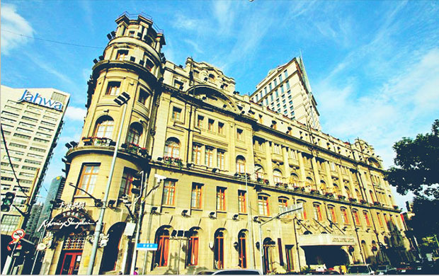

浦江饭店
ASTOR HOUSE HOTEL
位于黄浦路15号（浦江饭店）。初名礼查饭店。新瑞和洋行设计，宣统二年（1910年）建造。占地面积4580平方米，建筑面积1.57万平方米。部分钢筋混凝土结构、部分砖木结构六层，坐北朝南，英国新古典主义风格。
-

餐饮设施
FOOD AND BEVERAGE FACILITIES
中餐厅 西餐厅 咖啡厅
-
休闲设施
LEISURE FACILITIES
棋牌室 迪斯科舞厅
-
服务设施
SERVICE FACILITIES
会议厅 商务中心 停车场 DDD电话 IDD电话 洗衣服务 商场
浦江饭店简介
ASTOR HOUSE HOTEL
- 
浦江饭店1
浦江饭店2
浦江饭店3
位于黄浦路15号（浦江饭店）。初名礼查饭店。新瑞和洋行设计，宣统二年（1910年）建造。占地面积4580平方米，建筑面积1.57万平方米。部分钢筋混凝土结构、部分砖木结构六层，坐北朝南，英国新古典主义风格。底层饰券式门窗，主入口有铁架大雨篷。二层以上设挑出阳台；三、四层之间贯以多立克式柱。西侧转角处作半圆形，顶部设穹顶塔楼。西翼后部立面顶层为尖拱窗，三层为挑阳台。礼查饭店为上海开埠后第一家外商新式饭店，由英商阿斯脱豪司•礼查于道光二十六年（1846年）创建，初址在上海
浦江饭店旧址
ASTOR HOUSE HOTEL
礼查饭店为上海开埠后第一家外商新式饭店，由英商阿斯脱豪司•礼查于道光二十六年（1846年）创建，初址在上海公馆马路(今金陵东路外滩)。咸丰七年（1857年）购现址建造一幢二层楼外廊式西式饭店，咸丰十年（1860年）迁入。
浦江饭店内景
钢筋混凝土结构、部分砖木结构六层，坐北朝南，英国新古典主义风格
内景图
宴会厅
BANQUET HALL
活动概述
SUMMARY OF ACTIVITIES
位于黄浦路15号（浦江饭店）。初名礼查饭店。新瑞和洋行设计，宣统二年（1910年）建造。占地面积4580平方米，建筑面积1.57万平方米。部分钢筋混凝土结构、部分砖木结构六层，坐北朝南，英国新古典主义风格。底层饰券式门窗，主入口有铁架大雨篷。二层以上设挑出阳台；三、四层之间贯以多立克式柱。西侧转角处作半圆形，顶部设穹顶塔楼。西翼后部立面顶层为尖拱窗，三层为挑阳台。
礼查饭店为上海开埠后第一家外商新式饭店，由英商阿斯脱豪司•礼查于道光二十六年（1846年）创建，初址在上海公馆马路(今金陵东路外滩)。咸丰七年（1857年）购现址建造一幢二层楼外廊式西式饭店，咸丰十年（1860年）迁入。后经过光绪二十八年（1903年）、宣统二年（1910年）和1920年的改建、重建、增建，礼查饭店方形成现在的